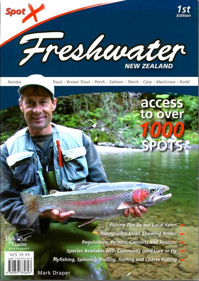

本棚から
Spot X Freshwater NZ NZの淡水釣りの釣り場ガイド
ふらふらとインターネットを彷徨っていたら、こんな良い本を見つけました。

Spot X Ltd という出版社から、2007年に発行された、ニュージーランドの淡水の釣りに関する総合的、かつ詳細なガイドブックです。
ニュージーランドのゲームフィッシングを管理している Fish and Game Council の協力によって編集されたそうです。
著者は、Mark Draper という方で、
Spot X Surfcasting New Zealand
Spot X Hunting New Zealand
などの本も執筆されています。
どうも聞いたことのある名字だな、と思って調べたら、僕が持っている「Fly Fishing for beginners」という本の著者、Keith Draper という方の息子さんでした。
僕が購入したのは、マイティ・エイプというニュージーランドのオンラインショップでしたが、他にも販売しているオンライン書店があるようなので、本体価格や送料をチェックして、お買い得な店を探してみて下さい。
この、wheelers というブックショップのウエブサイトにあった解説には、
「有名な魚釣りの達人であるマーク・ドレイパーは、フィッシュ&ゲームと全国からの専門家の支援を得て、ニュージーランドの淡水域を釣り、このわかりやすいガイドブックを書きました。この本にはノース・ケープからブラフまでの地形図が載っています。1,000を越えるスポットは、ニジマス、ブラウントラウト、サーモン、マッキノウ（レイク・トラウト）、ラッド、パーチ、キャトフィッシュ、テンチ、カープなどの人気魚種を幅広くカバーしています。
初心者であろうとベテランであろうと、この本には誰にとっても新しいものがあります。自分の住んでいる地域を越えて旅行する釣り人は、何百ものスポット、そこへの行き方、許可証、季節と方法の制限、難易度評価、釣りのヒントを見つけるでしょう。」
とありました。（参考：みらい翻訳）
表紙にプリントされたキャッチコピーには、
- ニュージーランド国内のエキスパートからの釣りのティップス
- アクセス経路を示す地形図を掲載
- フィッシングの規則、許可、連絡先、そして季節
- ニュージーランドで釣ることができる対象魚と、一般的に用いられているルアーやフライ
- フライフィッシング、ルアーフィッシング、トローリング、ハーリング、そしてコースフィッシングまでを網羅
などとあります。
さらに、1,000ヶ所以上の釣り場へのアクセスを掲載、とも書かれています。本文では、極めて詳細な釣り場の地図に、アクセスの難易度、そこで釣れる魚種、釣法（フライ、ルアー、トローリング、ハーリング、ベイトフィッシング、ジギング）毎のポイント、例えばフライフィッシングで狙うべき場所、トローリングでの有望なコースなどが図解されています。そしてボートを搬入・搬出できるボートランプの位置、公共トイレ、キャンプサイト、方位などが、解りやすいカラーのアイコンで示されています。
巻頭には、ニュージーランドならではの釣り用語集、釣りのティップス、秘訣、注意事項が簡潔にまとめられています。
時間に余裕があり、フィッシングガイドには頼らず、自分で釣り場を開拓してみたいと考えているアングラーには、ぜひお勧めしたい１冊です。
本棚から 目次へ
サイトマップ
ホームへ
お問い合わせ